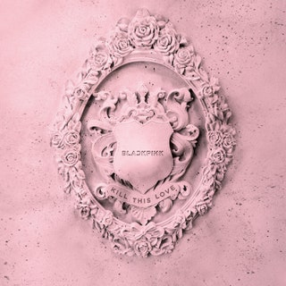

Blackpink: Kill This Love
Michelle KimRight now, BLACKPINK are the biggest K-pop girl group in the world. The rise of these four women has been precisely engineered by their label YG Entertainment—the South Korean entertainment conglomerate responsible for launching the careers of K-pop stars Big Bang, 2NE1, PSY, and many others—which cherry-picked a multicultural group to appeal to a worldwide audience. Only vocalist Jisoo was born and raised in Korea; vocalist Rosé was born in New Zealand and raised in Australia, Korean-born rapper Jennie was raised in New Zealand (both are fluent in English), and main dancer and rapper Lisa lived in Bangkok until she was 15. The girls perform in Korean and English, then record Japanese versions of each of their songs to maximize accessibility in multiple markets.
It’s been said that the decades-long Hallyu wave of Korean pop-cultural exports (which includes K-pop and K-dramas) is a government-funded and endorsed agenda to boost the nation’s global soft power and economy. But between BLACKPINK’s English-language advantage and the current explosion of global pop music in the United States, there has never been a female idol group more readily primed to follow BTS’ footsteps and fully cross over in America.
Last June, BLACKPINK’s U.S. takeover began when their massive international hit “Ddu-Du Ddu-Du” peaked at No. 55 on the singles chart. And this weekend, they will be the first K-pop girl group to perform at Coachella, four women spreading the gospel of K-pop to a mass of drunken festival-goers and easily influenced Instagram clout-chasers through perfectly synchronized choreography and simple hooks. Their new EP is specifically timed to make sure that BLACKPINK is able to convert the maximum number of Americans into Blinks (what they call their fans) ahead of the festival and the North American leg of their world tour.
Kill This Love
Kill This Love EP is a collection of five songs that exist largely to promote one massive single. The title track is the clear centerpiece, a trap-EDM banger with intense TNGHT horns and militant snares. Taking on a femme supervillain persona à la Taylor Swift‘s “Bad Blood,” the girls rap and sing about their determination to end a toxic relationship as if it’s a life-or-death situation, although without a catchy Swiftian hook. The song, like the rest of the songs here, is only half of the full BLACKPINK experience. The accompanying music video cranks up the drama, as the girls, clad in Tomb Raider and Suicide Squad-inspired outfits, whip out hip-hop moves in the middle of a giant bear trap. It’s such a confident and spectacular rehashing of pre-existing Western iconography that’s been popular in the past three or so years that BLACKPINK almost trick you into thinking that they’re presenting something completely brand new.
Though BLACKPINK can sing and dance with precision, the production of Kill This Love is also weirdly dated, like it was crafted earlier in the decade and then forgotten in a time capsule for five years. “Don’t Know What to Do” could have been a great pop song when EDM songs with acoustic guitar like Flo Rida’s “Whistle” were topping the charts or when that dolphin-flute synth sound was all the rage. Then, Kill This Love is confusingly rounded out by the country-tinged pop ballad “Hope Not,” which features heartfelt performances from all the members, but seems out of place within the rest of the project.
BLACKPINK’s core philosophy is rooted in mixing the hard and the soft, a concept fitting of their name. But because the sonic elements here are such polar opposites, it seems like another A&R tactic to ram in every genre, mood, and feeling to make the group marketable to the widest audience possible. Isolated from the visual components that complete the K-pop experience, listening to the EP feels like whiplash. This is further exacerbated by the fact that BLACKPINK is a rare K-pop idol group who doesn’t have a clear leader or front person. The individual talents and personality of each member are allowed to shine, encouraging fans to obsess over the specifics of their favorite member—even if it results in a bit of a genre mishmash.
Though BLACKPINK’s music isn’t groundbreaking or innovative or even that great, they’re still fulfilling YG Entertainment and South Korea’s larger mission to build a cultural presence in the rest of the world. To judge BLACKPINK solely as musicians would be like critiquing a United Nations ambassador for something as trivial as how well they can tie their shoe. They are specifically packaged to be representatives of South Korea and appeal to as many people as possible; they are edgy but not offensive, soft but not pushovers, and they were trained for years specifically so they could be flawless when they reach an American stage as big as Coachella. If their music isn’t changing the game, it’s on purpose.